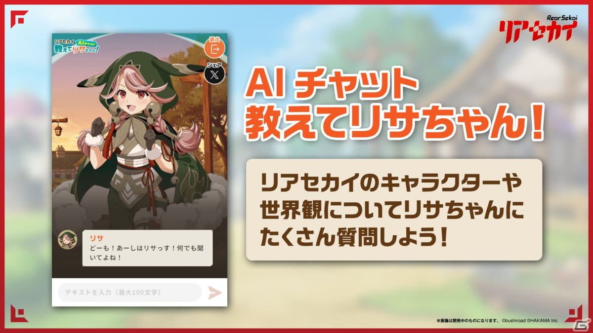

-
2024年 新たな挑戦の年
2024.07.17
2024年は挑戦の年にしたいと思っていまして、WEBデザイン技能を磨いて「出来る仕事の幅を広げる」ことが目標です。
口で言っても仕方ないので、2024年6月に国家資格の「WEBデザイン技能検定3級」に挑戦しました。
結果として見事合格することができたのでホッとしています。
今回試した学習方法なんですが、過去問を解く → 間違えた問題を復習する → 次年度の過去問を解く・・・という風に過去問ループで勉強していました。
この学習方法はとても自分に合っており、分からなかった問題を繰り返し挑戦することで理解度が深まりましたね。
2級以降は実務経験2年以上などの要件がつきますが、時を見て挑戦しようと考えています。
ウェブデザイン技能検定は、こちらのページから申し込むことができます。
-
リアセカイ遂にリリース！
2023.10.12
ブシロード様から任天堂Switch用ゲームソフト「リアセカイ」が本日発売となりました。
なぜブログに書いているかといいますと、リアセカイの発売を記念して公開されている「リサちゃんAIチャット」というサービスがありまして、そのAI作成を私が担当させていただいたからです。※現在AIチャットは停止中です。
このAIはChatGPTを活用したAIでして、PlayGround環境を使って構築いたしました。様々なバックグラウンド、口癖、性格、世界観などの情報を盛り込むことで、リサというキャラクタをうまく再現できました。
残念ながら現在はAIチャットで遊ぶことはできなくなっていますが、とても未来を感じさせてくれるような機能でしたので、もし遊ぶことができた方がいらっしゃいましたら感想をお聞かせいただきたいですね。
リアセカイ公式ページは、こちらのページです。
-
リモートワークの功罪について
2021.02.01
新型コロナウイルスが蔓延してきたため、弊社でもリモートワーク率が高くなりました。
そして実際にリモートワークで過ごすようになって色々と思うところがあります。
メリットとしては、朝ゆっくり起きれる・満員電車で1時間過ごさなくていいので快適・一瞬で帰宅できることで有意義な時間が増える といった点です。
ところが、私としてはデメリットを強く感じております。特に、これまでは気軽に相談したり打ち合わせできていたチームメンバーと話しにくくなったのは痛いところです。
軽い打ち合わせをするにもチャットで質問し、Zoomを立ち上げ、画面共有する必要があります。
また、これまでは対面で気軽に雑談していましたが、Zoomだと雑談しにくいですね。それが原因でストレスが非常にたまっています。
-
新型コロナウイルス検査キット販売開始
2020.06.11

新型コロナウイルスが猛威を振るっている昨今ですが、早急に感染状況を検査することができる抗体検査キットの販売を始めました。
この販売サイトに関しましては、私がデザインからコーディングまでを担当させていただきました。
また、他社はまだ広告も打てていないようですが、弊社のほうではGoogleなどに広告出稿できましたので、頑張ったかいがあったなぁと思います。
皆様のお手元に早急にお届けできるように尽力してまいります。
プレスリリースはこちらのページです。